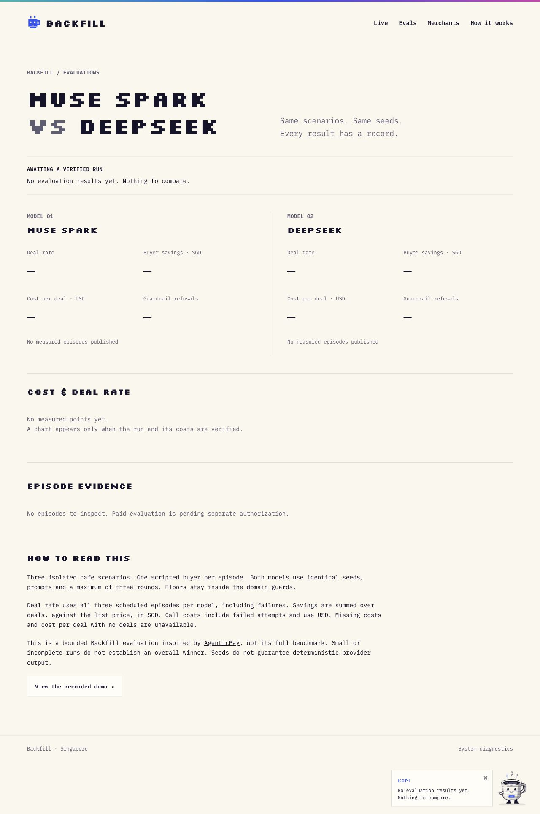
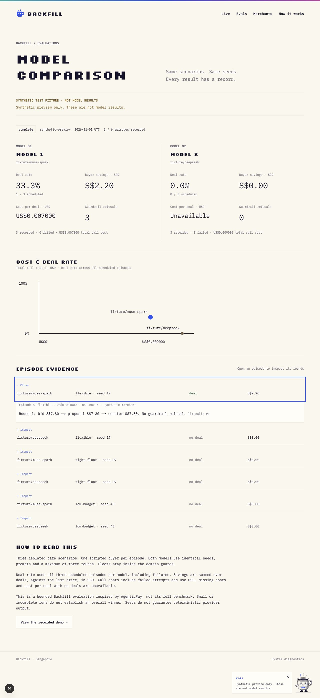
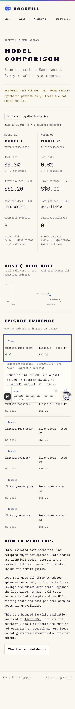
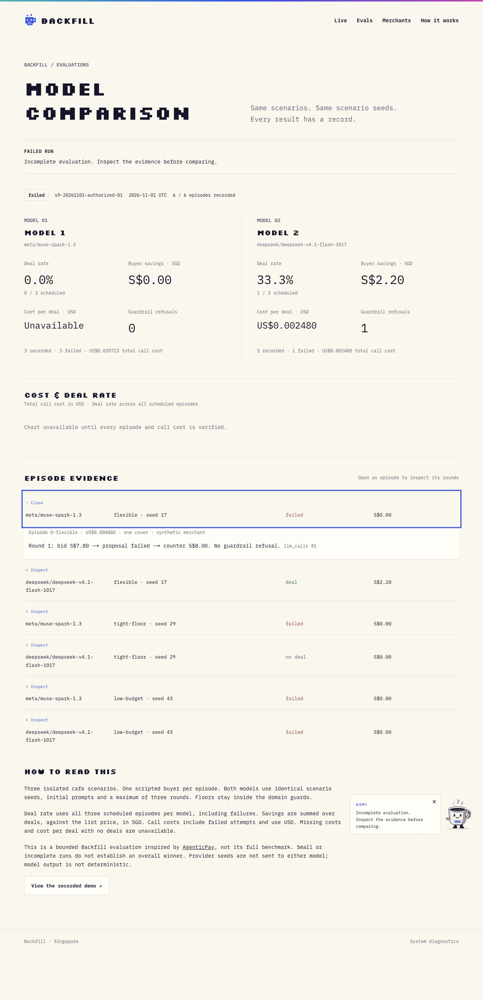
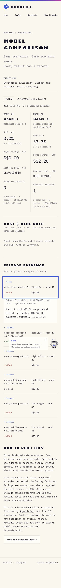

Offline only. Synthetic screenshots demonstrate rendering, not model performance. Nothing has been published.
Open empty page · Open labelled synthetic preview



Thirteen stored calls; four failed episodes. This is actual model evidence, not the synthetic fixture above. No winner is claimed.

